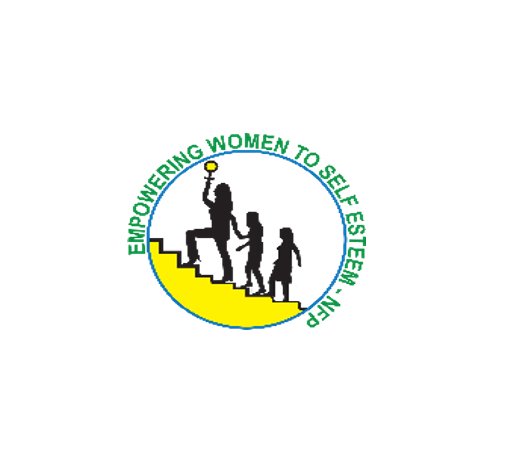
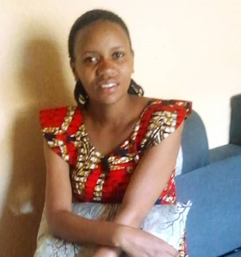
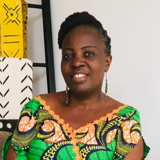
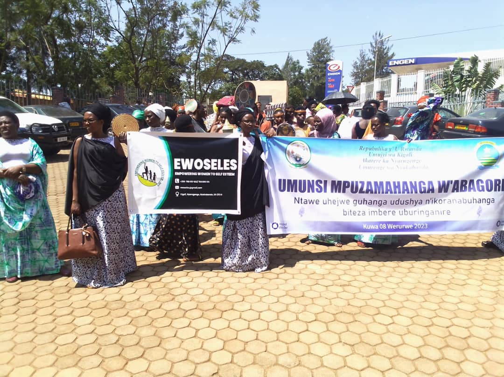
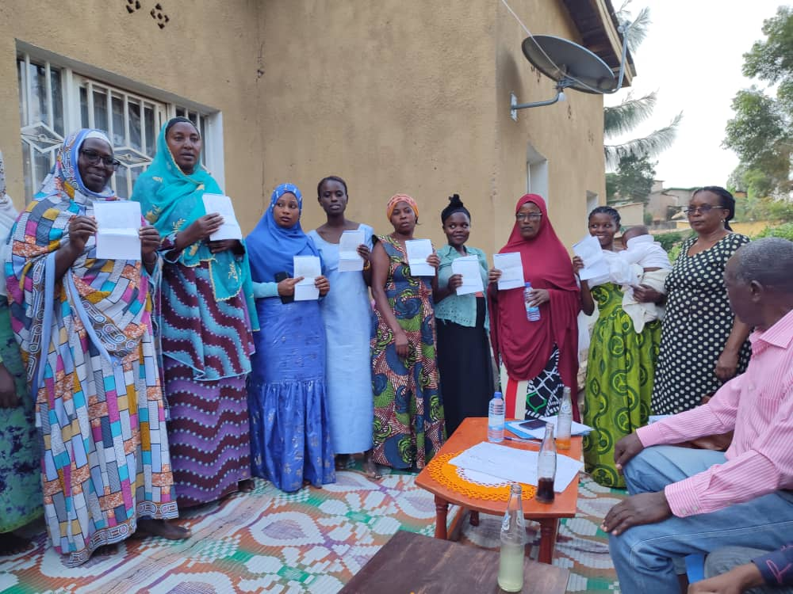
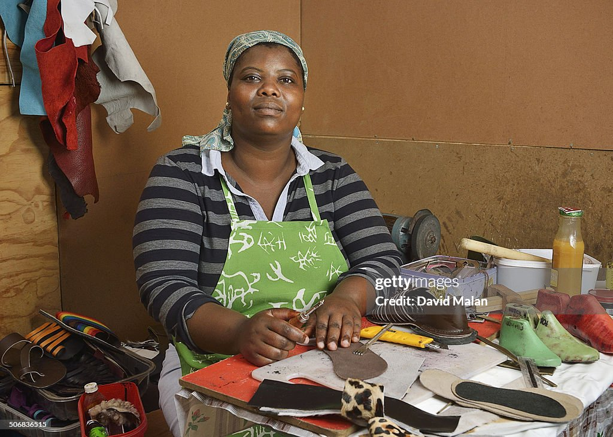

EWOSELES on Women’s day
In 2023, we partnered with the local government, specifically Nyakabanda Sector, to engage in advocacy and educational initiatives focused on promoting gender equality and women's empowerment.
The "Mutuelle de Santé" program.
Annually, we assist our beneficiaries in obtaining health insurance coverage for both themselves and their families.
The art of crafting.
We provide education to women on small-scale craft businesses that demand minimal capital yet offer swift and improved revenue prospects.
ABOUT US
A dedicated community committed to Empowering Women to Self Esteem. We believe that self-esteem is the cornerstone of a fulfilling and confident life.
Who We Are
EWOSELES, which stands for "Empowering Women to Self Esteem," is a local organization founded in 2015. Its official headquarters is located in the Nyakabanda Sector, Nyarugenge District, in Kigali City. The organization was established under the leadership of Esperance Nyiransabimana, a distinguished and extensively experienced social worker, boasting over two decades of proficiency in the realms of social work, sustainable development, and local governance. EWOSELES actively engages with a substantial community of over 2000 women, with a primary focus on uplifting marginalized women, enabling them to become self-empowered contributors to both their families and the broader sustainable development of the nation.
Objectives
Empowerment through Education Mentorship and Guidance
Job Training and Skill Development
Financial Assistance
Gender Equality Advocacy
Collaboration and Alliances
Community Engagement
Sustainable Development
Scaling Impact
Mission
To empower women in Rwanda by providing them with the tools, knowledge, and support needed to cultivate self- esteem, achieve gender equality, and eradicate gender- based discrimination. We are dedicated to fostering inclusive sustainable development for women, enabling them to realize their full potential and make positive contributions to their communities.
Vission
To be a driving force for women's empowerment in Rwanda, where women stand as confident leaders, thriving in a society marked by gender equality, and actively participating in the sustainable development of the nation. We aspire to create a future where every woman has the opportunity to reach her fullest potential.
Ultimate Beneficiaries
Street vendors
Teen and single mothers
Sex workers

Empowering Women to Self Esteem
We aspire to create a future where every woman has the opportunity to reach her fullest potential.

Deeply influenced by the
involvement in volunteering and civil
engagement work. My experience with our
organization has not only shaped my path but
has also inspired me to co-found other impactful
organizations. Furthermore, I have initiated my
own entrepreneurial ventures, including
establishing a tailoring workshop within my local
community, where I currently employ a team
of over seven women.
Mukabarezi Jeanne Francoise

Immediately after completing my high
school education,I became a part of our organization.
Through the extensive business
training she received, I embarked
on my entrepreneurial journey by
opening a modest boutique. Over
time, my boutique has expanded its
inventory significantly. Today, I am
a contented woman, a loving mother
to one child, and enjoys the support
of my husband. my journey is a testament to the
transformative power of our programs
in empowering women to achieve
their dreams.
Umwere Marie Jeanne
×
Knowledge is power, and EWOSELES recognizes that empowering women begins with
educating them about their rights. Through a series of workshops and awareness campaigns,
EWOSELES and Nyakabanda Sector's local government are working hand in hand to ensure
that every woman in the community is well-informed about her rights. These initiatives provide
women with the knowledge and tools to advocate for themselves and their peers, fostering a
sense of agency and self-confidence.
Inspirational stories are a potent catalyst for change. EWOSELES and the local government are
committed to shining a spotlight on the achievements of women within Nyakabanda Sector. By
celebrating these successful women, they aim to inspire others to reach for their dreams without
hesitation. These stories serve as reminders that resilience, determination, and hard work can
break barriers and pave the way for success. Success stories are not just about the end result;
they're about the journey. EWOSELES and Nyakabanda Sector's government believe in sharing
the stories of women who have overcome challenges, illustrating the power of resilience and
perseverance. These stories uplift others and serve as guiding lights for women facing similar
obstacles.
Women often flourish when they have access to support systems. EWOSELES and the local
government have initiated conversations about the various support networks available to
women in Nyakabanda Sector. These discussions aim to connect women with resources, such
as counseling services, vocational training, and financial assistance, which can help them thrive.
Empowering women includes granting them control over their reproductive choices.
EWOSELES and Nyakabanda Sector's government have introduced educational programs on
family planning. By providing women with information and access to contraceptives, they enable
them to make informed decisions about their family's size and spacing, ultimately improving
their quality of life.
Gender-based violence is a pervasive issue that affects countless women worldwide.
EWOSELES and the local government are addressing this challenge head-on. They are
implementing strategies to prevent and combat gender-based violence, including awareness
campaigns, legal support, and safe spaces for victims to seek help and healing.
EWOSELES and Nyakabanda Sector's government understand the importance of assessing
the impact of their initiatives. They have put in place mechanisms to monitor progress regularly,
ensuring that their efforts are making a tangible difference in the lives of women within the
community.
The partnership between EWOSELES and Nyakabanda Sector's local government in 2023
represents a remarkable step forward in the journey towards gender equality and women'
empowerment. By prioritizing education, celebrating success, and addressing critical issues
such as family planning and gender-based violence, they are working together to create a more
equitable and supportive environment for women. This collaboration serves as a beacon of
hope, inspiring not just women but the entire community to champion the cause of gender
equality and women's empowerment.
×
EWOSELES recognizes that healthcare is a basic human right and a critical factor in achieving
gender equality and women's empowerment. Annually, the organization extends its support
beyond traditional empowerment initiatives to assist its beneficiaries in obtaining health
insurance coverage for both themselves and their families.
To make this annual endeavor possible, EWOSELES adopts a multifaceted approach:
Savings: EWOSELES diligently sets aside a portion of its resources throughout the year to
contribute to the health insurance fund. The organization's members save 100 RWF every
week, and that money is kept in fixed deposit accounts specifically designated for health
insurance. Healthcare is the most basic need for women and families, especially for
disadvantaged women like street vendors, sex workers, and teen mothers.
Partnerships: Collaboration with other organizations is a key driver of EWOSELES' success. By
partnering with healthcare-focused organizations and institutions, they are able to access
additional funding and resources to bolster their health insurance initiative.
The impact of EWOSELES' annual health insurance assistance is profound:
Access to Care: By providing health insurance coverage, EWOSELES ensures that its
beneficiaries can access essential medical services without the burden of high healthcare costs.
This not only improves their health but also enhances their overall quality of life.
Peace of Mind: Health insurance coverage brings peace of mind to women and their families. It
alleviates the financial stress associated with medical emergencies and empowers them to seek
timely healthcare when needed.
Community Resilience: A healthier community is a more resilient one. EWOSELES' commitment
to healthcare access contributes to the long-term well-being of the entire community, fostering
an environment where individuals can pursue their dreams and aspirations without being
hindered by health-related obstacles.
EWOSELES' dedication to providing health insurance coverage for its beneficiaries annually
exemplifies its holistic approach to women's empowerment. By securing funds through savings
and partnerships with other organizations, EWOSELES is not only improving the health and
well-being of women and their families but also contributing to the overall resilience and
prosperity of the community. In this noble mission, EWOSELES continues to be a beacon of
hope, ensuring that healthcare is a right accessible to all, regardless of gender or circumstance.
×
EWOSELES firmly believes that women's empowerment begins with independence, particularly
financial independence. In many communities, women and girls often resort to prostitution due
to limited economic opportunities. To break this cycle of vulnerability, EWOSELES has
embarked on a mission to equip such women with the skills and knowledge needed to generate
income on their terms, without relying on husbands, families, or others.
EWOSELES has designed comprehensive training programs in various fields, enabling women
to choose the business that aligns with their interests and strengths. Some of the fields include:
Shoe Making:
Women are trained in the art of crafting shoes, providing them with the skills to
enter the footwear industry and create their own businesses.
Information Technology:
EWOSELES offers training in IT, empowering women with the skills
needed for the digital age. This training includes computer literacy, software proficiency, and
basic programming.
Tailoring:
is a versatile skill that allows women to create garments and tap into the
fashion industry, catering to local demand and even exploring global markets.
Ornament Making:
Crafting ornaments and jewelry not only provides an outlet for creativity but
also offers opportunities to establish thriving businesses in the jewelry market.
The small-scale businesses offer several advantages, aligning with the organization's goal to
provide swift and improved revenue prospects to women:
Low Capital Requirements:
These businesses demand minimal capital, making them
accessible to women with limited financial resources.
Economic Independence:
By acquiring skills and engaging in small-scale craft businesses,
women can attain economic independence, reducing their reliance on external support.
Diverse Opportunities:
EWOSELES' training programs offer diverse opportunities, allowing
women to explore various fields and discover their passions.
Empowerment and Confidence:
As women see their businesses flourish, they gain a sense of
empowerment and self-confidence, enabling them to face life's challenges with resilience.
EWOSELES' commitment to empowering marginalized women and girls through business
training is making a significant impact. By addressing the core issue of financial capacity, the
organization is not only transforming individual lives but also building stronger and more resilient
communities.
Through these initiatives, women are finding their path to financial independence and breaking
free from the cycle of vulnerability. EWOSELES is not just providing training; it is offering
marginalized women the tools to shape their destinies, reclaim their independence, and craft a
brighter future for themselves and their families. As more women embrace these opportunities,
they are not just crafting beautiful products but also crafting their own success stories of
empowerment and resilience.
BLOG
Provides an overview of the importance of Empowering Women

OCT
07
2023
Empowering Women: EWOSELES' 2023 Partnership with Nyakabanda
Sector Government
In the quest for gender equality and women's empowerment, the civil society organizations act
as beacons of hope. In 2023, EWOSELES took a significant step towards achieving its mission
by forming a strategic partnership with the local government of Nyakabanda Sector. This
partnership was dedicated to advancing women's rights, celebrating success stories, and
addressing crucial issues like family planning, gender-based violence, and support systems for
women in the community.
Read More

OCT
07
2020
EWOSELES: A Beacon of Healthcare Access for Women and Families
In the realm of women's empowerment, access to healthcare is a fundamental pillar of support.
For EWOSELES, an organization dedicated to uplifting disadvantaged women and their
families, annual efforts to secure health insurance coverage have become a lifeline. Through a
combination of savings and partnerships with other organizations, EWOSELES continues to
ensure that its beneficiaries can access the healthcare they need, fostering a healthier and
more resilient community.
Read More

SEPT
15
2022
Empowering Women for Independence: EWOSELES Offers Training in
Small-Scale Businesses
EWOSELES, an organization dedicated to uplifting marginalized women and girls, has taken a
groundbreaking step, recognizing the vital link between financial independence and women's
empowerment, EWOSELES provides training in small-scale business ventures that require
minimal capital but offer swift and improved revenue prospects. By doing so, the organization
aims to address one of the root causes of gender-based vulnerabilities, such as prostitution –
the lack of sufficient financial capacity.
Read More